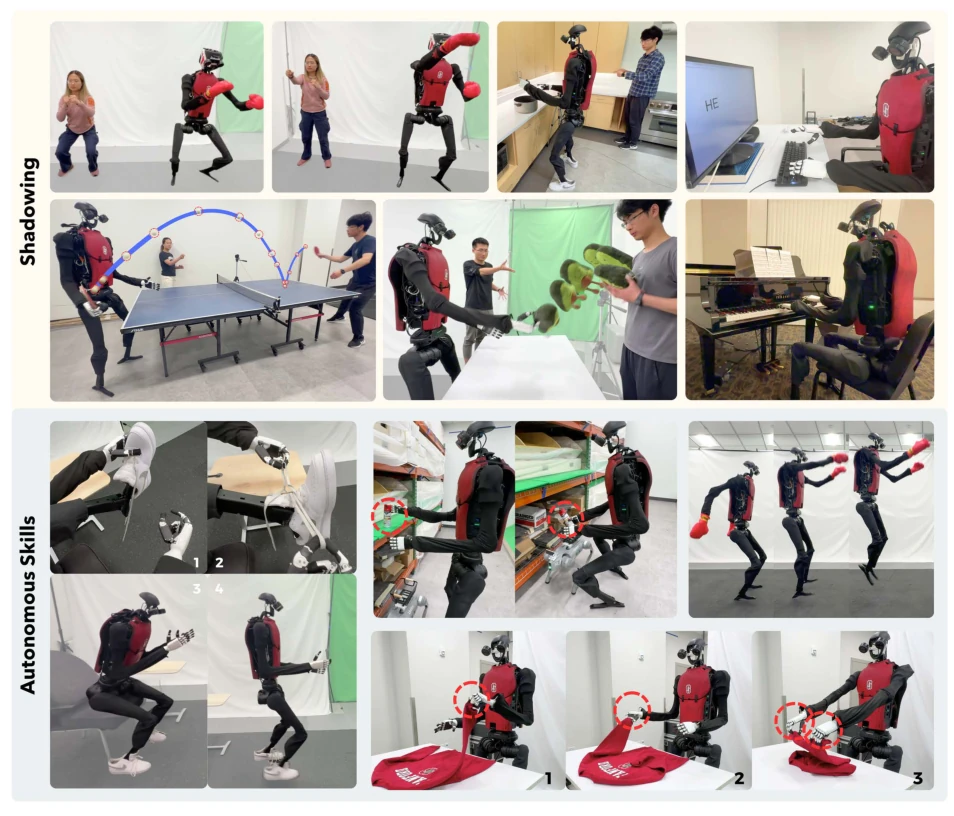
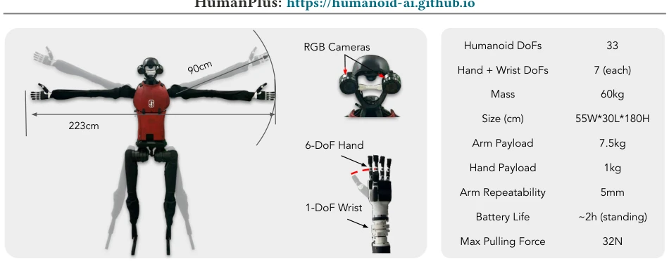
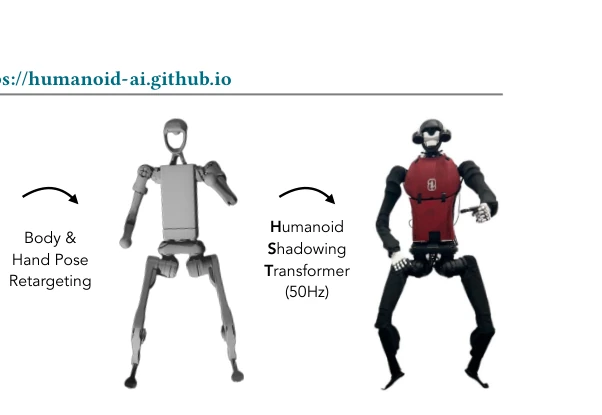
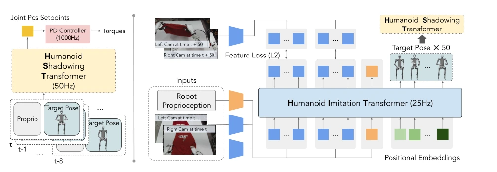
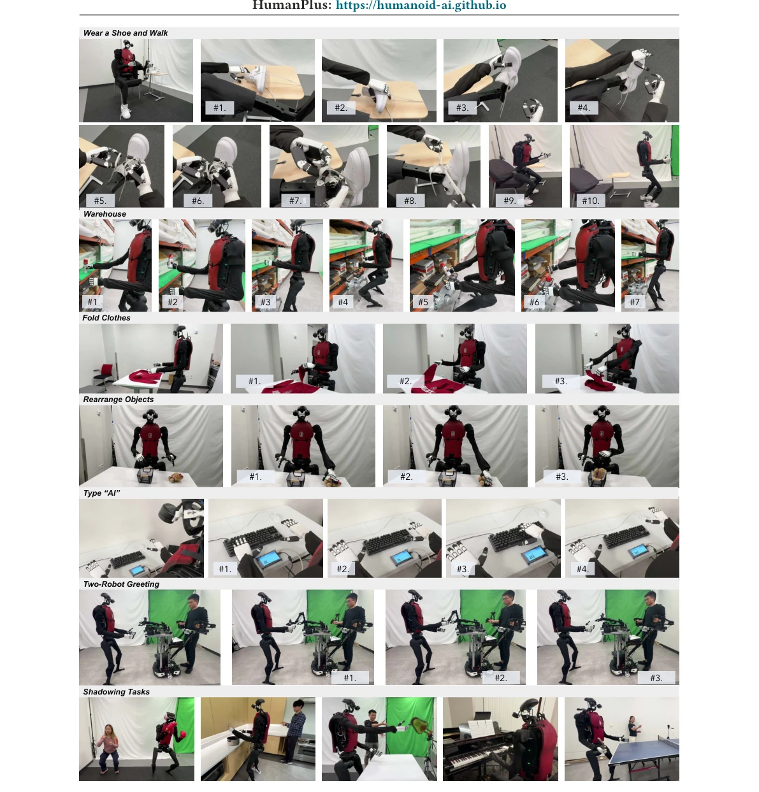
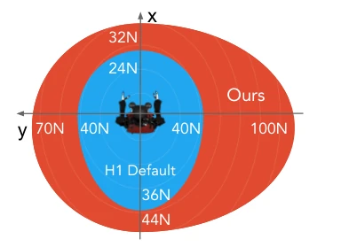

The biggest selling point of this HumanPlus system lies in the closed loop of "low-cost full-body teleoperation + imitation learning", replacing motion capture with monocular RGB, which indeed saves a lot of money and has strong engineering deployability. But do not be misled by the 60-100% success rate; tasks are mainly concentrated on short-horizon manipulation, while long-range navigation and complex physical interaction remain weaknesses. In terms of hardware, the 33 degrees of freedom are far from the 200+ joints of a real human, making it impossible to learn certain actions (such as single-leg balance). Retargeting is also fixed; the robot can only imitate human actions it "can imitate", not all. Overall, this is an excellent "specialized" system, not a general-purpose brain, suitable for automation in specific scenarios, still having a physical gap from true "general-purpose robots".
Humanoid robots attract attention because the environment is designed for humans, theoretically allowing the reuse of massive human data. But reality is stark: humanoid robot perception and control are extremely complex, and there is a physical gap between humans and robots in morphology (e.g., degrees of freedom, height) and actuation, leading to difficult data transfer. Existing teleoperation schemes rely on expensive motion capture systems [17, 20] or exoskeletons [35, 63], and are limited by operation position. Reinforcement learning strategies are often task-specific [19, 68] and difficult to scale. The lack of a low-cost, full-body teleoperation data pipeline hinders the application of imitation learning in the real world. This study aims to build a full-stack system to solve problems of difficult data collection, complex control, and physical gaps.

Figure 1: Stanford HumanPlus Robot. We present a full-stack system for humanoid robots to learn motion and autonomous skills from human data. Our system enables robots to shadow fast, diverse motions from a human operator, including boxing and playing table tennis, and to learn autonomous skills like wearing a shoe, folding clothes, and jumping high.

Figure 2: Hardware Details. Our HumanPlus robot has two egocentric RGB cameras mounted on the head, two 6-DoF dexterous hands, and 33 degrees of freedom in total.
The system is divided into low-level control and high-level skill learning. 1. Low-level: Utilize the AMASS dataset to train the Humanoid Shadowing Transformer via PPO in simulation, achieving task-agnostic full-body control, supporting monocular RGB real-time teleoperation, and zero-shot transfer to real machines. 2. High-level: Utilize binocular egocentric data collected via teleoperation to train the Humanoid Imitation Transformer (HIT). HIT adopts a decoder-only architecture, inputting visual features and proprioception to predict action chunks. Innovations include: introducing forward dynamics prediction with image features, regularizing the feature space to prevent policy overfitting to proprioception; teleoperation requires only monocular RGB, supporting full-body control (such as squatting, walking).

Figure 3: Shadowing and Retargeting. Our system uses one RGB camera for body and hand pose estimation.

Figure 4: Model Architectures. Our system consists of a decoder-only transformer for low-level control, Humanoid Shadowing Transformer, and a decoder-only transformer for imitation learning, Humanoid Imitation Transformer.
实验Experiments
在 33-DoF 人形机器人上测试。遥操作对比 Kinesthetic, ALOHA, Meta Quest，本系统完成时间最短且支持全身控制（如 Rearrange Lower Objects）。模仿学习对比 Monocular, ACT, Open-loop。结果显示 HIT 成功率最高（60-100%），尤其在“穿鞋行走”任务中唯一成功（60%），ACT 因过拟合本体感知失败。遥操作稳定性方面，本系统恢复时间更短（<3s vs 20s）。消融实验证明双目视觉和前向动力学正则化对性能提升关键。
Tested on a 33-DoF humanoid robot. Teleoperation compared with Kinesthetic, ALOHA, Meta Quest; this system has the shortest completion time and supports full-body control (e.g., Rearrange Lower Objects). Imitation learning compared with Monocular, ACT, Open-loop. Results show HIT has the highest success rate (60-100%), especially uniquely successful in the "Walk with Shoes" task (60%), while ACT failed due to overfitting proprioception. In terms of teleoperation stability, this system has shorter recovery time (<3s vs 20s). Ablation studies prove that binocular vision and forward dynamics regularization are key to performance improvement.

Figure 5: Task Definitions. We illustrate 5 autonomous tasks through imitation learning, and 5 shadowing tasks. Details are in Section 7.
其他图片Other Figures

Figure 7: Maximum Force Thresholds. Our low-level policy can withstand larger forces compared to H1 Default controller.